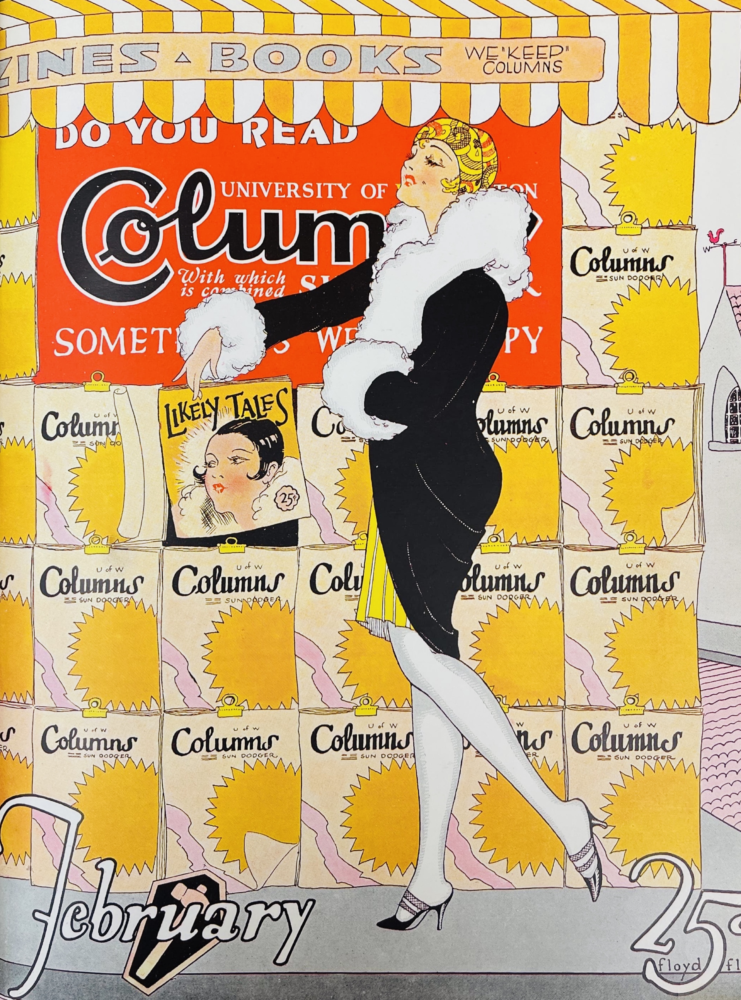
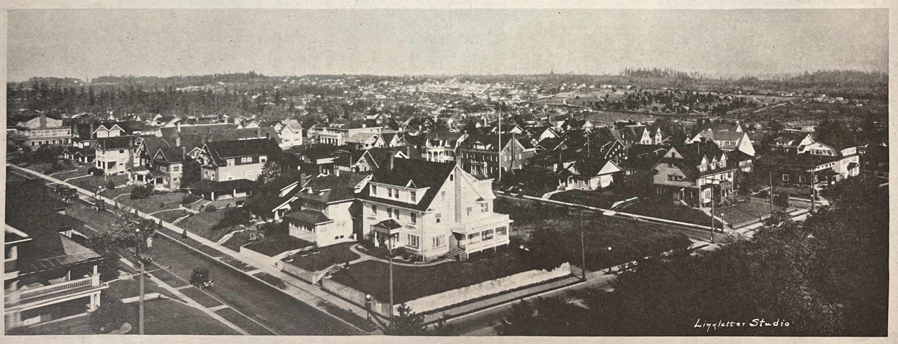

<!DOCTYPE html>
<html lang="en">
  
  <head>

    <meta name="viewport" content="width=device-width, initial-scale=1.0, maximum-scale=1.0, user-scalable=no" />

    <link rel="stylesheet" href="https://unpkg.com/leaflet@1.9.3/dist/leaflet.css" integrity="sha256-kLaT2GOSpHechhsozzB+flnD+zUyjE2LlfWPgU04xyI=" crossorigin>

    <script src="https://unpkg.com/leaflet@1.9.3/dist/leaflet.js" integrity="sha256-WBkoXOwTeyKclOHuWtc+i2uENFpDZ9YPdf5Hf+D7ewM=" crossorigin></script>

    <script type="text/javascript">
      var reader = new XMLHttpRequest() || new ActiveXObject('MSXML2.XMLHTTP');

      function loadFile(file) {
        reader.open('get', file, true);
        reader.onreadystatechange = displayContents;
        reader.send(null);
      }

      function displayContents() {
        if(reader.readyState == 4) {
          var el = document.getElementById('main');
          el.innerHTML = reader.responseText;
        }
      }
    </script>

    <style>
      body {
        padding: 0;
        margin: 0;
      }

      html, body, #map {
        height: 100%;
        width: 100vw;
      }

      /*div.container {
        display: inline-flex;
      }

      #map, #pennant {
        position: absolute;
      }

      #pennant {
        width: 200px;
        height: auto;
        justify-self: right;
        z-index: 10;
      } */

      img.landscape {
        width: 200px;
        height: auto;
        margin: 15px;
        display: inline;
      }

      img.portrait {
        height: 200px;
        width: auto;
        margin: 15px;
        display: inline;
      }
    </style>

  </head>
  
  <body>

    <!--<div id="container">-->

      <!---->
      <div id="map"></div>

    <!--</div>-->

    <script>

      var w = window.innerWidth;

      if(w > 800) {
        var map = L.map('map', {
          crs: L.CRS.Simple,
          minZoom: -2,
          maxZoom: 1
        });
      } else {
        var map = L.map('map', {
          crs: L.CRS.Simple,
          minZoom: -3,
          maxZoom: 1
        });
      }

      var bounds = [[0, 0], [2821, 4407]];
      var image = L.imageOverlay('./uw_map.jpg', bounds).addTo(map);
      map.fitBounds(bounds);

      var MapIcon = L.Icon.extend({
        options: {
          shadowUrl: './Icon_Shadow.png',
          iconSize: [60, 60],
          shadowSize: [60, 60],
          iconAnchor: [30, 30],
          shadowAnchor: [30, 30],
          popupAnchor: [-3, -15]
        }
      });

      var grad = new MapIcon({iconUrl: './Grad.png', popupAnchor: [3, 15]}),
          column = new MapIcon({iconUrl: './Column.png'}),
          diploma = new MapIcon({iconUrl: './Diploma.png'}),
          football = new MapIcon({iconUrl: './Football.png'}),
          gym = new MapIcon({iconUrl: './Gym.png', popupAnchor: [3, 15]}),
          magazine = new MapIcon({iconUrl: './Magazine.png', popupAnchor: [3, 15]}),
          newspaper = new MapIcon({iconUrl: './Newspaper.png'}),
          president = new MapIcon({iconUrl: './President.png', popupAnchor: [3, 15]}),
          rook = new MapIcon({iconUrl: './Rock.png', popupAnchor: [3, 15]}),
          shopping = new MapIcon({iconUrl: './Shopping.png'}),
          sigma = new MapIcon({iconUrl: './Sigma.png', popupAnchor: [3, 15]}),
          suzzallo = new MapIcon({iconUrl: './Suzzallo.png'})

      L.marker([2352.9574, 2015.5426], {icon: grad}).addTo(map).bindPopup("" + "When first arriving at the University of Washington you would be issued an ID card like this. Only being used for one school year, it would be made of a thin cardstock and would help you register for classes, get food in the dining hall, and be used as a season football ticket.");

      L.marker([538.6596, 444.5106], {icon: column}).addTo(map).bindPopup("" + "Where every UW tour ends, the original columns have become an icon of the campus in their present location on Sylvan Grove. The original University building downtown had survived up until 1911, but as the city expanded northward, the land in which the building sat on became more valuable. Sadly it would have only cost the school $10,000 to save the building and move it to the present campus location, but despite then president Kane and alumni’s efforts to raise the money, the school was more focused on the future instead of its past and only the columns would survive and be moved onto the new campus.");

      L.marker([1731.25, 1993.2766], {icon: diploma}).addTo(map).bindPopup("" + "Graduation is a time honored tradition at UW dating back to the first graduate in 1876. Before husky stadium and thousands of departmental graduations, it was a simple affair of meeting on the steps of Denny Hall. Depicted in this June 1920 commencement issue of the Daily we see a glorious parade of graduates passing by many of the landmarks that make the UW 100 years ago so special.");

      L.marker([579.2553, 2683.4043], {icon: football}).addTo(map).bindPopup("" + "A program for the first football game at Husky stadium on Nov. 27, 1920, it was a thanksgiving game, where the Washington football team as they would have been known then would lose to Dartmouth 27-8.");

      L.marker([1879.8511, 2781.4468], {icon: gym}).addTo(map).bindPopup("" + "Completed in 1927, the women’s gymnasium replaced a space built in 1896 and was built in tandem with Hec Ed. Before the IMA, students used this space's many gyms and pools to exercise and fulfill their physical education requirements. The building would survive as a gymnasium until the 1990s where it would be taken over by the School of Drama and renamed to Hutchinson Hall. Interestingly the pool wouldn’t be filled until 2011, but many remnants remain of its history as a gym through paintings that hang in some of the studio spaces.");

      L.marker([2077.7128, 671.5106], {icon: magazine}).addTo(map).bindPopup("" + "Column’s magazine was a student publication that ran from 1920 all the way up until 1957. Offered at most newsstands in the growing U-District, it reported on many different aspects of the university experience in a humorous and illustrated view.");

      L.marker([1381.0851, 2472.9043], {icon: newspaper}).addTo(map).bindPopup("" + "Before housing the Scandinavian studies department, Raitt hall had many hats to wear. Being built in 1916 in the newly ingratiate Liberal Arts Quadrangle, it was originally called the home economics building and housed said department as well as most famously the Daily’s original newsroom. Unlike the current newsroom, it was open-air with a collection of tables, mis-matched chairs, clacking typewriters, and a small sign near the entrance that read “Journalism Hall”.");

      L.marker([2166.7021, 2410.0957], {icon: president}).addTo(map).bindPopup("" + "One of the most famous UW presidents because of his association with one of the most famous buildings on campus. Henry Suzzallo became president of the UW in 1915 after teaching sociology at Columbia and Stanford. Under his tenure at UW he would be involved in matters of the student body, especially the school's entry into World War One. Following that conflict he would help to push forward the construction of a central research library. Though it would open in 1926, because of a dispute over the length of the work day for loggers with then Governor Roland Hartley, he would replace over half of the members of the board of regents. Who would fire Suzzallo and replace him with UW’s next president Matthew Lyle Spencer. Sadly he would die only a few years later in 1933, and the library would be named in his honor.");

      L.marker([1993.3511, 1748.9362], {icon: rook}).addTo(map).bindPopup("" + "The Chimes Tower was a beacon that could be seen from miles away when it was first built in 1904. Originally serving as a water tower next to the Theodore Jacobson Observatory, it would be converted to a chimes tower in 1914 with the donation by then editor of the Seattle Times Col. A.J. Blethan of said bells. It would provide a great lookout onto the newly developing greek row and Union Bay, it would sadly burn down in 1949.");

      L.marker([1993.3511, 499.6596], {icon: shopping}).addTo(map).bindPopup("" + "The Lady Betty Shop was a hosiery store that opened on the Ave in the early 1920s and primarily serviced female students keen on purchasing stockings to wear with the on-trend knee length skirts. Surprisingly the building still stands, and currently houses a hair salon.");

      L.marker([2451.2553, 2744.4043], {icon: sigma}).addTo(map).bindPopup("" + "This is what you would have seen from the top of the chimes tower. From this viewpoint you are looking out onto 45th St. and 18th Ave, and can see newly built homes that would have housed professors and students. Greek row as we know it today was only just being established and many of the frat houses of this period did not survive and were rebuilt in the 1950s and 60s. One thing to note in this photo is the lack of trees around the houses, many early Seattle neighborhoods were completely gutted of the original forests with only small yards that surrounded the house. ");

      L.marker([613.2021, 1390.6064], {icon: suzzallo}).addTo(map).bindPopup("" + 'Only a twinkle in the university\'s eye in 1923, construction would begin on a permanent space for the UW’s growing library collections. Being housed in many different places over the years, a “library" would first be placed in Denny Hall, eventually moving over to the Washington Museum built for the AYP Exposition in 1909. Finally with the completion of this library in 1926 it would become the “Jewel of the University”, a title in which it and the world famous reading room would hold to this day. Original plans for the library included two wings and a tower, but due to major expenses incurred to build the reading room, only one wing would be completed.');

    </script>
  </body>
</html>
